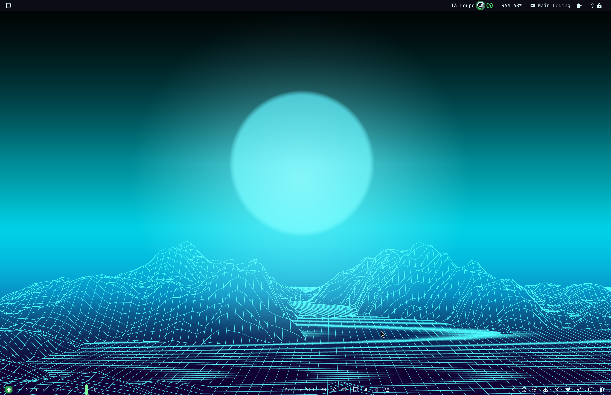
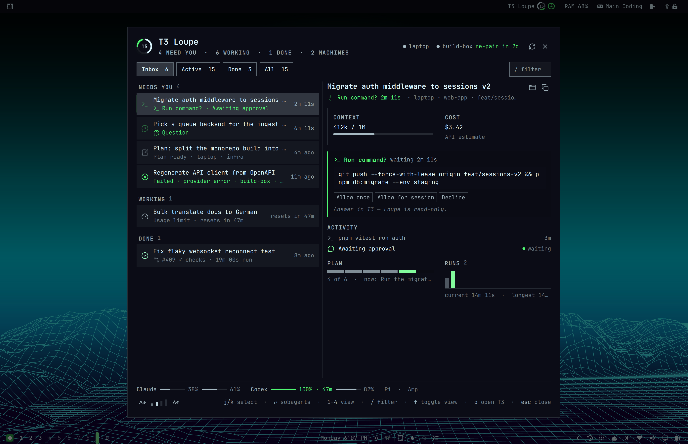

Six agents working.
Two machines.
One is waiting on you.
Every T3 Code agent, on every machine, in one glance — the detail you need surfaces the moment you look.
1920×1080 · 45s · 6 FRAMES · NO VO · MUSIC BED · LAYOUT SKETCHES, NO MOTIONThree lines, one at a time. “Six agents working.” → “Two machines.” → “One is waiting on you.” Each swaps through a short zoom-through; the last arrives and holds. (Faint lines show the earlier beats.)
in: cut
The desktop, dimmed; the loupe drops from the bar. A marker pings the bar item, the lens opens beneath it with the word, the ring and the “4 need you” badge large and sharp. Caption reveals left of the sun.
in: blur-crossfade
Lens glides from the Needs-you list to the approval. First stop: the four rows that need you (caption “What’s blocked comes first.”). Shown here: second stop on the pending command and its Allow / Decline options.
in: zoom-through
Same window position as 03, so the cut feels like one camera. Lens tours activity (“Every tool call, live.”) → the facts strip shown here → plan and runs (“Plan and runs, at a glance.”).
in: crossfade
The breather. Pull back from the dropdown’s machines row to the whole desktop: sun, wireframe mountains, the compact dropdown under the bar. Caption and key hint settle; nothing else moves.
in: blur-crossfadeThe ring draws itself, the wordmark lands, then the lockup demotes upward. A $ chip stretches into the terminal card and the two commands type out. “For Omarchy · T3 Code” fades in; hold, then fade to ground.
in: zoom-through